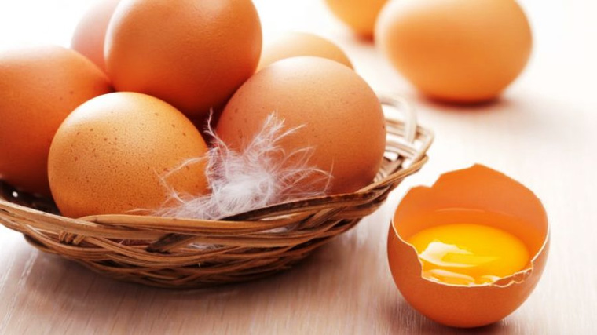

Эта старая русская поговорка говорит о том, что праздник Пасхи считается самым светлым и радостным христианским праздником. Всего православная церковь отмечает двенадцать великих праздников, но Пасха не включена в их число, — она как бы порождает некоторые из них и радует людей своим вечным смыслом.
Вообще, праздник Пасхи существовал с давних времен, и праздновали его древние евреи в память освобождения своих соплеменников из египетского плена. В этот день в жертву приносился ягненок и считалось большим грехом заниматься повседневными делами.
Начиная с V века христиане отмечают Пасху как праздник «Христова воскресения», а поскольку пасхальный день всегда происходит весной, хочется отдохнуть от зимних холодов и ранней темноты. Поэтому праздник Пасхи наполнен многочисленными обрядами, традициями и игрищами. Но главным героем этого великого праздника было, будет и остается самое обыкновенное яйцо, а не убитый ягненок. Именно оно считается символом жизни, о чем мы уже упоминали в нашей книге.
Предания говорят, что обычай дарить окрашенные яйца произошел от Марии Магдалины (существует посвященный ей праздничный день — 4 августа), которая подарила красное яйцо императору Тиберию, сказав при этом: «Христос воскрес!» Произнеся эти слова, она начала свою проповедь к римлянам.
Красный цвет означает возрождение всего человеческого рода, спасенного ценою крови распятого Иисуса Христа. Само же яйцо — символ гроба и зарождения в нем новой жизни, бесконечной и светлой. Поэтому не случайно принято обмениваться яйцами со знакомыми и незнакомыми людьми: после «прощеного дня» каждый человек освобождается от тяжести грехов, смирив свою гордыню и получив прощение от своих близких за все причиненные им обиды, а в сам день Пасхи он вновь обретает надежду на вечную жизнь в Божьем Царстве, очищенный страданиями Спасителя.
Слова «Христос воскрес!», обязательно сопровождающие процесс вручения яйца, говорят о радостной вере в Христа, в его воскрешение, а духовный брат или сестра (именно в этот день люди особенно чувствуют свое вечное родство в Боге) также дарит крашеное яйцо, со словами «Воистину воскрес!».
Обмен яйцами проходит на протяжении всего праздничного дня, но по возможности люди стараются сделать это с утра, обходя всех своих родных, близких, друзей и просто знакомых. За несколько дней до Пасхи яйца окрашивают в разные цвета, а умельцы и фантазеры разукрашивают их искусными узорами и рисунками.
На Пасху лучше варить как можно больше яиц, чтобы не передаривать уже врученные вам символические подарки, а знать, кто именно подарил вам вон этот маленький символ большого праздника.